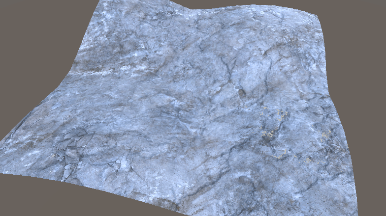
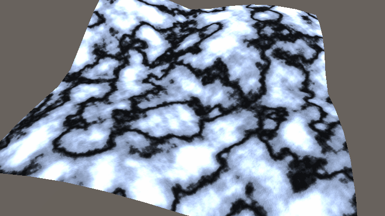
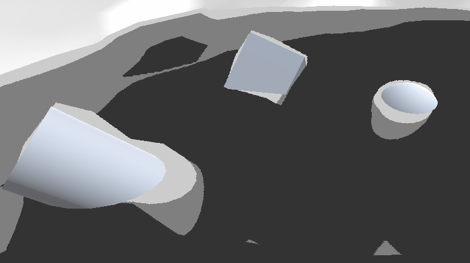
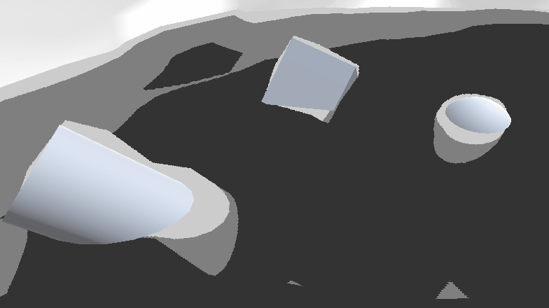
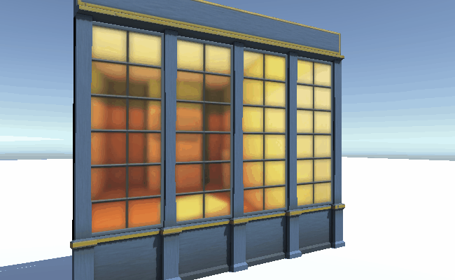
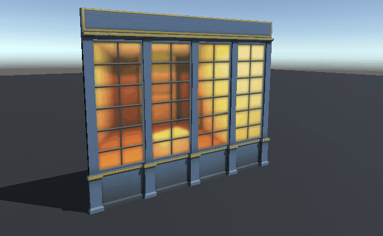
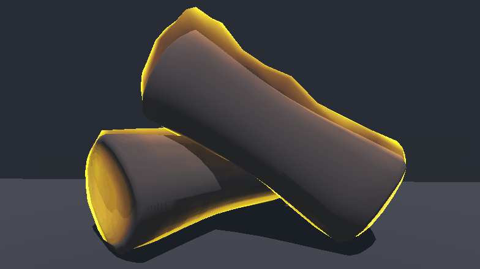

This shader blends between two sets of textures. It combines vertex colours and height maps to give granular control over the blend.
 

A water shader inspirted by the incredbile oceans of The Legend Zelda: The Wind Waker. This used sine waves to control vertices and texture scrolling, and a depth check to add the edge highlight and darker depths.


A couple of shaders inspired by Overwatch. The first fakes depth for cheap building interiors. The second is a shield shader that shows geometry intersection and alpha blending.


A stylised flame shader than can be used on any mesh. It uses vertical scrolling noise to manipulate vertices.